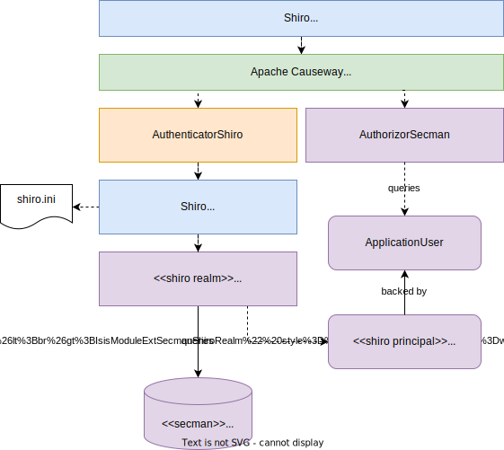
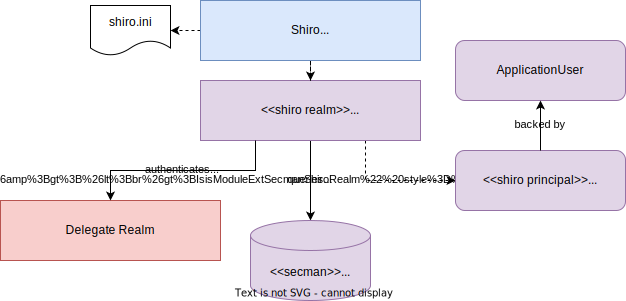

SecMan
SecMan provides an implementation of the Authorizor SPI, to determine whether the currently logged-in user has access to a given object member
This authorization is implemented using domain entities, which means that authorizations/permissions can then be administered from within your Apache Isis application. Moreover, the set of permissions (to features) is derived completely from your application’s metamodel; in essence the permissions are "type-safe". The domain model is explained in more detail below.
SecMan can be used just for authorization, or it can be used in conjunction with Apache Isis' Shiro security implementation to perform authentication, where a password is held for each application user. This integration is discussed in more detail below.
This guide explains these concepts in more detail, and describes how to configure secman for use.
Users, Roles and Permissions
As described in the introduction, the primary purpose of SecMan is to provide an implementation of the Authorizor SPI, to determine whether the currently logged-in user has access to a given object member:
-
the logged-in user is represented as an Authentication
-
by "object member" we mean either an action, property or collection,as represented by an Identifier
-
by "access", we mean whether the object member is visible to the user, and if so whether it is usable (not disabled) by the user.
SecMan’s Authorizor implementation uses domain entities to model users, roles and permissions. Each permission relates to an "object feature". Object features themselves come in three varieties:
-
the most fine-grained object feature is an object member
for example
myapp.customer.CustomerAddress#zipCode -
next up is an object feature representing an entire type
for example
myapp.customer.CustomerAddress. This is usually specified using @DomainObject#logicalTypeName() -
most general is an object feature representing a namespace
These consist of the portion of the logical type name up to but excluding the local type name, for example
myapp.customer.
Permissions are inferred: a permission granted at the type level implies a permission to all the object members of the type, and a permission granted to a namespace implies a permission to all the object members of all the object types within that namespace.
Multipart namespaces also imply a hierarchy and permissions can be inferred through that hierarchy.
For example the myapp.customer namespace has a parent myapp namespace.
Permissions granted to the myapp namespace will be inferred by types in the child myapp.customer namespace.
Permissions are also either additive or subtractive: they can indicate the user has been ALLOWed access to an object member, or they have been VETOed access.
Because of permission inference, there could be more than one permission that applies to an object member, where one permission is an ALLOW and another permission is a VETO.
SecMan uses the most specific permission to determine whether access should be granted or not.
For example:
-
if there is an
VETOonmycompany.customer, but anADDRESSonmycompany.customer.CustomerProfile, then access will be given to the object members inmycompany.customer.CustomerProfilebecause the type-levelALLOWtakes precedence over the namespace-levelVETO. -
if there is an
ALLOWonmycompany.customer.CustomerAddress, but aVETOonmycompany.customer.CustomerAddress#zipCode, then access will be given to all the object members ofCustomerAddressexcept forzipCode.
Domain Model
The diagram below shows the domain model for SecMan, and how it relates to the features obtained from the core metamodel:

SecMan’s users, roles and permissions are entities, but application features are serializable value types that are derived from the Apache Isis metamodel.
Thus:
-
a user (represented by ApplicationUser) can belong to many roles (ApplicationRole)
-
a role in turn holds a set of permissions (ApplicationPermission). Each such permission is either an
ALLOWor aVETOto an application feature, represented by a fully qualified name -
this resolves to an ApplicationFeatureId (from the core metamodel). That feature will be either a namespace, a type or a member.
The core metamodel also provides ApplicationFeature (each being identified with an ApplicationFeatureId that makes it easier to navigate around the application feature hierarchy.
The domain model also shows the ApplicationTenancyEvaluator interface and ApplicationTenancy entity. These are to support multitenancy, discussed in the section below.
Multitenancy
In addition to users, roles and permissions, SecMan also supports multitenancy. The idea is that the ownership of domain objects is logically partitioned into tenants; one tenant cannot see or access the data owned by another tenant.
Implementing multitenancy requires that both data and user is "tagged" in some way, and that these tags are compared against each other to determine if the user has access to the tagged data. This is represented in the domain model through the ApplicationTenancyEvaluator SPI interface. The idea is that the application provides its own implementation of this interface, that performs the evaluation of whether the current user can view the domain object or not (and if they can, whether the domain object members are disabled/read-only).
One simple implementation is to tag domain objects with a "path", and similarly to store a "path" for each application user.
The idea behind the ApplicationTenancy is simply to name these tenancies; its atPath property is intended to be a primary key.
The ApplicationUser entity also has an atPath property.
We could therefore use this "atPath" to represent a country, eg "/GBR", "/ITA", "/FRA", "/BEL" and so on.
For example, the example below uses implements the rule that a user can always view an object within (above or below) their place in the path "hierarchy", and can edit any object "under" them in the hierarchy:
@Service
public class ApplicationTenancyEvaluatorUsingAtPath implements ApplicationTenancyEvaluator {
@Override
public boolean handles(Class<?> cls) {
return HasAtPath.class.isAssignableFrom(cls); (1)
}
@Override
public String hides(Object domainObject, ApplicationUser applicationUser) {
final String objAtPath = ((HasAtPath) domainObject).getAtPath();
if(objAtPath == null) { return null; } // show
final String userAtPath = applicationUser.getAtPath();
if(userAtPath == null) { return "user does not have atPath"; } // hide
return objAtPath.startsWith(userAtPath) || userAtPath.startsWith(objAtPath) (2)
? null
: "object not visible within user's tenancy";
}
@Override
public String disables(Object domainObject, ApplicationUser applicationUser) {
final String objAtPath = ((HasAtPath) domainObject).getAtPath();
if(objAtPath == null) { return null; } // enable
final String userAtPath = applicationUser.getAtPath();
if(userAtPath == null) { return "user does not have atPath"; } // disable
return objAtPath.startsWith(userAtPath) (3)
? null
: "object not enabled within user's tenancy";
}
}| 1 | SecMan provides the HasAtPath interface to standardize the way in which domain objects expose their "tag" (atPath) to the evaluator. | |||||||||||||||
| 2 | can view all objects (above and below) within the user’s hierarchy
For example:
|
|||||||||||||||
| 3 | can edit only objects at or below the user’s hierarchy
For example:
|
More complex implementations are possible: ultimately the "atPath" properties are just strings and so can be interpreted in whatever way makes sense. For example, to allow a user to be able to access objects from multiple countries, we could use a format such as "/ITA;/BEL". The implementation would parse the string and allow access for any country.
For this reason, the ApplicationUser's atPath property is not a foreign key to the ApplicationTenancy entity.
| Another implementation of ApplicationTenancyEvaluator can be found in the Demo App.. |
Shiro Integration
While SecMan is primarily designed for authorization (as per the Authorizor SPI), it is necessary when running an Apache Isis application to specify an authenticator. SecMan provides specific support so that Apache Isis' Shiro security integration can be used for authentication.
This is implemented through the SecMan’s shiro realm submodule, which provides an implementation of Apache Shiro’s Realm interface that then calls back into SecMan.
The diagram below sketches the high-level architecture:

Thus:
-
Apache Isis' Shiro security integration sets up Shiro web filters to intercept every http request, as well as the AuthenticatorShiro implementation.
-
The
AuthenticatorShirocalls to the Shiro Security Manager to obtain the authenticated principal. -
The Shiro Security Manager uses the
shiro.iniconfiguration file to look up the realm to perform the authentication; in this case we configure it to use Secman’s realm (IsisModuleExtSecmanShiroRealm). -
Secman’s realm implementation queries the database and uses this to create an instance of
PrincipalForApplicationUser, where thePrincipalinterface is Shiro’s representation of an authenticated user. ThePrincipalForApplicationUseris backed by ApplicationUser, which all of the permissions to object members for this particular user. -
to render a page, the Apache Isis viewer uses configured
Authorizor, in this case Secman’s own AuthorizorSecman. This looks up the current ApplicationUser (which will already reside in-memory) and renders the page according to which object members are visible or not.
The above configuration allows Secman to be used to authenticate users; the password is stored as an (typically) encrypted property of the ApplicationUser.
These are called "local" users, as per the ApplicationUser's accountType property.
Secman’s Realm implementation also allows a "delegate" realm to be configured. In such cases the authentication of "delegated" users is performed by the delegate realm rather than locally.
The diagram below shows where this delegation occurs:

Configuring the delegate realm is performed using Shiro’s "poor man’s dependency injection" syntax in its shiro.ini file.
Password encryption
Secman provides the PasswordEncryptionService SPI to allow different algorithms to encrypt the user’s password.
The encryption-jbcrypt module provides an implementation using the jBCrypt library.
SecMan’s structure
SecMan consists of a number of Maven submodules:
-
the API module (
isis-extensions-secman-api) defines a set of interfaces for the ApplicationUser, ApplicationRole, ApplicationPermission and ApplicationTenancy entities. -
the two persistence modules (
isis-extensions-secman-persistence-jpaandisis-extensions-secman-persistence-jdo) provide concrete implementations of the APIs for JPA and JDO respectively. As you might expect, they are intended for use with JPA/Eclipselink and JDO/DataNucleus persistence mechanisms respectively; use one or the other. -
the Model module (
isis-extensions-secman-model) defines view models to represent the feature application features, and also contains business logic as mixins to the API (and therefore contributed to the appropriate concrete entity). -
the Shiro realm module (
isis-extensions-secman-shiro-realm) provides the Shiro realm interface that delegates to the Secman database (see discussion above) -
the jbcrypt encryption module (
isis-extensions-secman-encryption-jbcrypt) provides an implementation of Secman’s PasswordEncryptionService so that passwords are persisted securely using jBCrypt.